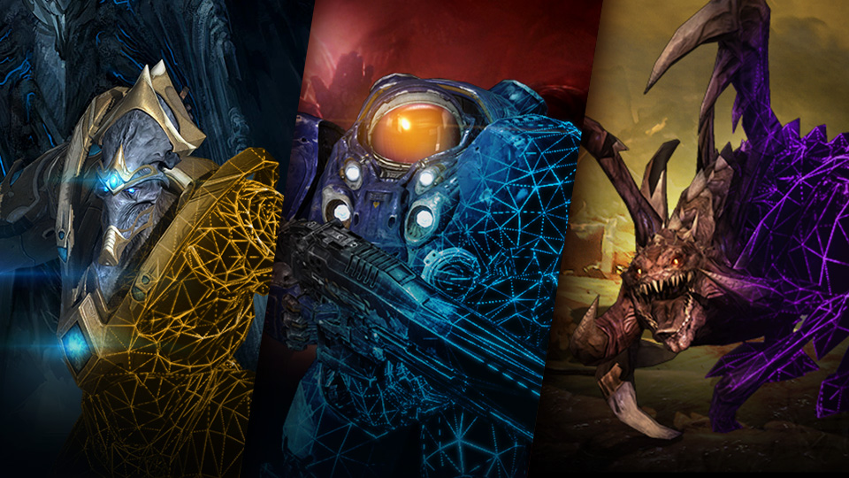

一、关于游戏平衡性
即时战略游戏中的一个重要因素就是其平衡性，即不同种族之间的平衡性。进行游戏各方的经济生产的能力、军事生产的能力、军事调动的能力、军事对抗的能力等都要达到某种动态平衡，从而避免出现实力不均衡的情况。
如果能力不平衡，玩家们就会去选择一两个好用种族，其它的根本不会有人再去使用，或者在玩的过程中一方享有压倒性的优势，使游戏很快结束。这些都会影响即时战略游戏的游戏性，特别是影响到网络对战效果和游戏的可重复性。
二、星际争霸2的游戏平衡性
“种族”不平衡
种族不平衡指的是同时影响另外两个族的不平衡。比如说：SCV采矿更快，这样会让人类同时更轻易击败异虫和星灵。
“针对性”不平衡
针对性不平衡指的是一个族对于另外一个族的不平衡。比如说：增加人类EMP的范围会使人类VS星灵变得更加轻松，却不会影响人类VS异虫。
游戏体验的平衡
如果某个单位相当强势但是却很简单粗暴手感差，而另外一个单位弱势但是手感极好并且相当有趣，那么在玩家看来某种意义上他们是平衡的，这种平衡不是在伤害数值上的而是体验上的。
三、星际争霸2保持平衡的机制
版本更新
暴雪不定期对星际争霸进行版本更新，调整单位、建筑、科技等影响游戏的数值。版本更新是可见的最频繁的调整平衡性的方式。
但是版本更新时的修改调整不一定是符合当前游戏平衡状况的，存在削弱或增强过度或不到位的情况。这就需要平衡师对游戏平衡性有一个相对客观的认识。
地图更换
星际争霸2的天梯地图由于地图整体情况不同，对各个种族利弊也不同。大多数地图对某一种族或者某一对抗具有优势。例如涡轮巡飞城的减速力场在人类VS异虫的情况下对异虫有较大的限制。
每个赛季星际争霸2的天梯地图都会进行部分更新，用全新的地图替换掉旧的，从而对游戏平衡性造成影响。
由于地图更新慢，次数少，且一旦上线就无法进行大规模调整，所以有一定局限性，而这种局限性可以由玩家通过地图禁用的方式来减小。
校正胜率
《星际争霸II》中，每个种族对于其他种族的相对胜率是拿来评估平衡性的工具之一，称为校正胜率。
在计算“校正胜率”的过程中，已经去除了天梯配对机制对胜率的补差影响，并综合考虑了玩家的技术因素。通过整合当前正在进行的数百万游戏的信息，以及成百上千的玩家的隐藏技术积分，再辅以一些小小的数学计算，我们就能相当精确地计算出每个种族相较其它种族而言，究竟胜率有多高。
可以用多种方式来划分这些统计数据：按联赛、按地区、按特定时段，或是按照方便进行数据分析的任意方式。它们的最终结果（再整合上许多来自其它渠道的数据）就像同一幅图的不同碎片，拼凑起来，就能看到《星际争霸II》当前平衡性的总体情况。
数据仅仅只能作为参考，并不能完全准确地反应平衡性问题
天梯机制
星际争霸2的天梯机制为某种统计学上表现不出来的不平衡提供了“表面平衡”。
如果出现针对性不平衡。假设有这么三个对于三族理解都是80分的人，唯一的不平衡是人类比异虫强，那么人类玩家在天梯的排名就会比异虫玩家高，假设系统对于人类玩家的内部评分就是80分，因为种族不平衡让实际实力为80分的人类战胜了80分的异虫，于是那些异虫都被认为是70分。
而被系统误判断为为70分的异虫玩家就会遇到70分的星灵，对于70分的星灵来说，他们会觉得异虫太强，因为他们本来就应该遇到70分的异虫，但是那些异虫实际上实力都是80分的，同时为了摆平那些星灵玩家的胜率，系统会给他们配出更弱的人类。
而对于那些人类玩家呢？他们战胜了被系统评为70的异虫，但是系统最终会给他们安排更强的星灵，比如90分。最终，所有人的异族对抗胜率都会降低，而这些降低的胜率会利用同族对抗来加回来。
如果出现了种族不平衡，比如说，异虫比人类和星灵都要弱，那么天梯会如何平衡呢？
异虫玩家会面对比自己实力都弱的人类和星灵，他的天梯排名会比实际实力要低,但是他永远都不会知道这个情况（除非他能强到无视平衡性的地步）。只要这种种族不平衡没有严重的影响到职业玩家的实力对比，那么我们都会天真的以为这个游戏是平衡的。
四、星际争霸2当前平衡性问题
1.神族可能存在的强势
神族强势的问题在这个赛季由来已久，其中最具说服力的例子是在星际争霸2最顶级的比赛之一GSL上，八强中神族选手有七名。这在职业比赛中是不可接受的。不同种族的职业选手在总体上实力相当，但是出现如此情况显然与平衡问题有关。
神族强势点主要存在于前期战术的极端多变性、棱镜的高度可操作性以及可怕的兵力生产速度。